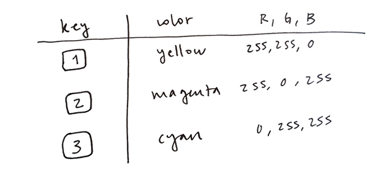

To see the complete code and running sketch click here.
To see the complete code and running sketch click here.
Description
In this final project example we create our own drawing tool. By pressing keys, the user can select between three colors we chose, and make the stroke smaller or bigger.
Learning Activities Reference
Steps Outline
Step by Step
First, let's draw a line from the position of the mouse in the current frame, to its position in the previous frame, as we did in LA 2.1. Remember p5 keeps the value of these in its built-in variables mouseX, mouseY, pmouseX and pmouseY.
function draw(){
line(mouseX, mouseY, pmouseX, pmouseY);
}When the user presses a key, p5 saves its value in its built-in key variable and calls the keyTyped() function ––if it finds it in our code. So let's define it. Now whenever the user types a key (for now, any key), the background will be re-set to black:
function keyTyped(){
background(0);
}To clear the canvas only when the user presses the 'c' key, we need to add an if statement, and check whether the value of key is equal to 'c':
function keyTyped(){
if(key == 'c'){
background(0);
}
}Now let's have the drawing color change when the user presses different keys. First, let's choose our colors, look up their RGB values, and decide which keys will select each of them. We chose the following mapping:  Remember you can look up color codes here [link from prev LA].
Second, let's declare a variable to hold the current drawing color, and set it to yellow (or any other) in setup(). Before drawing our line, we now set the color to the value of this variable:
var drawingColor;
function setup(){
//by default, set color to yellow
drawingColor = color(255, 255, 0);
}
function draw(){
stroke(drawingColor);
line(pmouseX, pmouseY, mouseX, mouseY);
}To respond to key presses, we can just add a series of else if's to our if statement in keyTyped(). Remember else can be read as otherwise (see LA ?.?).
function keyTyped(){
//If the key is the 'c', re-draw the background
if(key == 'c'){
background(0);
}
else if(key == '1'){
//set color to yellow, with transparency = 180
drawingColor = color(255, 255, 0, 180);
}
else if(key == '2'){
//set color to magenta, with transparency = 180
drawingColor = color(255, 0, 255, 180);
}
else if(key == '3'){
//set color to cyan, with transparency = 180
drawingColor = color(0, 255, 255, 180);
}
}
Try your sketch now. When you press 1, 2 and 3, the drawing color should change.
This step is similar to the previous one. First we add a variable to keep track of the stroke weight, and set it to a default value in setup(). Then, before drawing our line, we set the stroke weight to the value of that variable (see lines X, Y and Z in final example code)
var drawingWeight;
var drawingColor;
function setup(){
createCanvas(600, 240);
drawingColor = color(255, 255, 0);
drawingWeight = 2;
}
function draw(){
//Set drawing weight and color
strokeWeight(drawingWeight);
stroke(drawingColor);
line(pmouseX, pmouseY, mouseX, mouseY);
}
Now, let's decrease the weight when the '-' key is pressed. We can do this by subtracting one to the value held by the drawingWeight variable and then assigning this new value to it. Similarly, we have drawingWeight increase when the '=' key is pressed.
else if(key == '-'){
//decrease the value of drawingWeight by one
drawingWeight = drawingWeight - 1;
}
else if(key == '='){
//increase the value of drawingWeight by one
drawingWeight = drawingWeight + 1;
}
}
Finally, let's set a minimum and maximum value for the weight by adding one more if statement, like so:
else if(key == '-'){
if(drawingWeight > 10 ){
drawingWeight = drawingWeight - 1;
}
}
else if(key == '='){
if(drawingWeight < 70 ){
drawingWeight = drawingWeight + 1;
}
}
To see the complete code and running sketch click here.